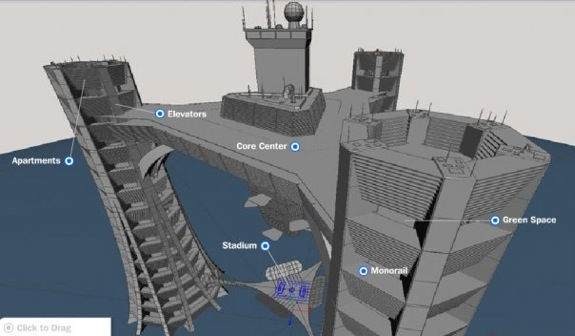
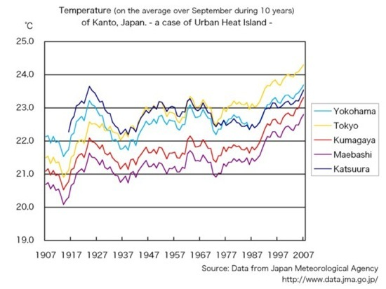

A Case for Arcologies


Urban sprawl, overpopulation, and growth are all major factors that lead to an unsustainable future. This is due largely to the fact that human civilization has had the tendency to grow outward, instead of upward. This method of expansion has lead to human habitat increasingly encroaching on the habitat of other species, as well as spending the majority of our resources on transportation and related infrastructure. Transportation, particularly automobile use, is a major consumer of energy and contributes to roughly one third of our total greenhouse gases emitted (Netherlands Environmental Assessment Agency:http://www.mnp.nl/edgar/model/v32ft2000edgar/). Even new movements such as New Urbanism and Smart Growth do not eliminate sprawl, or even car dependance. They advocate for light rail, bicycle infrastructure, and mixed use development, but do not change a development pattern that is highly inefficient, and spreads connecting services in a two dimensional grid over the biosphere.
Working to combat urban sprawl, and instead to grow upwards instead of outward, Paolo Soleri has developed and is testing the principles of arcology, which is a concept that combines principles of architecture and ecology. Soleri envisions ultra dense, super structures, where the whole of a city is connected in one structure. Thinking in terms of biomimicry, Soleri has noticed the tendency of nature to adhere to the three parameters of increasing complexity, increasing miniaturization, and to evolve over a long temporal duration (Soleri, 1984). The complexity parameter somewhat obviously manifests through arcology structures when trying to create one building that contains all the needs of a civilization. The miniaturization principle refers to the relatively small land footprint that these structure require by placing everything together in three dimensional space, both because this reduces many redundant walls and because it eliminates extensive transportation networks. Finally, these structures are so large and complex that they take fifty to several hundreds of years to build, which critics argue will render many current technologies obsolete. However, a look into today’s most sustainable cities exert the reverse correlation. The cities that have been around since the middle ages, such as those in Western Europe are among the most sustainable, whereas choking suburban sprawl has been a recent phenomenon. Existing as the diametric opposite of urban and suburban sprawl, Soleri attempts to house entire civilizations in ultra dense structures, eliminating our current stranglehold on the biosphere, and opting instead to miniaturize and grow upwards in what could be the most efficient form of civilization.
There are several developments and structures which demonstrate various degrees of adherence to the principles of arcology. However, because of the complexity and expense of these developments, many of these projects remain unbuilt except where there is both great wealth and overpopulation. Tokyo is one of the most viable candidates for arcology structures because it has the greatest population of any metropolitan area, has major congestion issues, and the highest land prices in the world (Japanese Ministry of Internal Affairs:http://www.stat.go.jp/data/nenkan/zuhyou/y1714000.xls). Kisho Kurokawa, a famous Japanese architect, has said “...that even staggeringly ambitious buildings employing highly sophisticated engineering are still cheap, because companies pay 90 per cent of their money for the land and only 10 per cent for the building”. Three proposed arcology or megacity concepts for Tokyo are Sky City 1000, so named because it would be 1000 meters tall which would house ~150,000 people, the Shimizu Mega-City Pyramid, which would top out at 2004 meters and house ~750,000 people, and the tallest building ever envisioned, the X-Seed 4000, which would top out at 4000 meters and house up to one million residents. Sky City 1000 is currently being considered to be somewhat feasible, since the tallest manmade structure, the Burj Dubai, recently topped out at 818 meters. Dubai is also a candidate for megacity structures, somewhat ironically having acquired it’s wealth through oil. The Dubai City Tower is the second tallest structure ever envisioned, and would top out at 2,400 meters and have 400 habitable stories. Other proposed self contained cities include the Dongtan in China, Crystal Island is Moscow, and La Ville radieuse in France.
Skyways everywhere serve to connect multiple buildings in networks that unify the city into a type of arcology. Skyways are also a solution that reduces automobile use, while encouraging pedestrian traffic. The Plus 15 Skyway in Alberta is the most extensive skyway network, spanning 10 miles in total and connecting 64 blocks.
Vertical farming is also an idea that would the reduce agricultural footprint, by instead creating a glass structure with several floors of compact farming. These projects and collections of structures and buildings express a spectrum of adherence to arcology principles, some intentional, and others by necessity.
Soleri’s sole project, Arcosanti, remains the truest to the principles he developed. Soleri picked a site 20 miles northeast of Phoenix on arid or marginal lands to prevent continued development of valuable agricultural space. He began construction in 1970 in Scottsdale, Arizona and was only 3% completed as of 2000, but is planned to be completed by 2030. There are few full time residents, but they site does attract about 150 students per summer and 50,000 tourists annually. (Lang 125) It is designed to house 215 to 400 per acre, with a total population of 1,500 to 5,000. It currently exists of the testing grounds of Soleri’s visions and is one of the smallest arcologies he has imagined. Many of his plans span twice the height of the empire state building, and are designed to house half a million people. Still, Arcosanti remains true to the principles of arcology. The natural world is sharpest divided with the built, and close interconnected elements enjoy efficient pedestrian based access. However, since there is neither wealth nor overpopulation in Arcosanti, and funding is largely donation and education based, progress remains slow and most of the structures completed are only those that produce revenue, rather than those that would provide a central city core.
Sky City 1000, originally proposed in 1989, may come sooner. The design consists of three 1000 meter tall structures, joined by two platforms in the center. Each tower consists of 14 “Space Plateaus”, which are each 56 meters tall and encompass green space on the outside, and mixed use on the inside. The structure would house residences, offices, commercial facilities, schools, theaters, and possibly an olympic stadium resting on the lowest platform.

Tokyo's Sky City
With such a variety of uses, the structure would exist as a self contained city, with the exception of food and power use. However, if the green space is used agriculturally it would provide food to the residences, and perhaps wind power could be harvested, as there are several designed elements simply to provide stability to the structure which would experience excessive winds at such an altitude. Although is in unclear if there is sufficient green space to provide food to each tower’s 35,000 residents and the design also mentions no on-site power, making it unlikely that the structures would need no additional input. One benefit that would passively reduce energy use if the surrounding area is demolished or no longer in use is the reduction of the urban heat island effect, which has already raised the city of Tokyo 3º Celsius. (Japan Swelters Under Urban Heat Island Effect:http://ipsnews.net/news.asp?idnews=34527)

The heat island effect.
So far, at least in America, farming technology has kept up with rapid growth needs. However, constant expansion into valuable agricultural land cannot be sustained even with genetically engineered high yield crops. An estimated 85% of the land usable for a minimal agricultural land is already occupied. (Food and Agriculture Organization, World Health Organization. 2004 statistics on crop production). Adhering to the principles of arcology, one solution would be to grow upward, instead of outward. High rise towers would stack levels of agricultural land in high rise buildings of around 30 stories. Not only does this severely reduce the land footprint of agricultural buildings, but incorporation of hydroponics, nutrient cycling, and year round lighting result in much greater yield per acre. One acre of vertical farm farmland could amount to as much as 20 soil based acres, depending on the crop (The Vertical Farm: http://www.verticalfarm.com/essay_print.htm). Additionally, the yield that is produced is more protected from natural disasters and pests that destroy much crop. The farm towers also take advantage of cradle to cradle principles (McDonough, 2002) by recycling the nutrients from human sewage, constantly exchanging nutrients between floating hydroponic beds and farmed fish below, and continuously recycling water. Today, ~70% of fresh water is used for conventional agriculture (ibid.), and vertical farms would not only use less, but reclaim the evapotranspirated water into potable drinking water. Vertical farms would also produce more energy than they consume by processing various types of waste. Human sewage would be processed on the bottom floor and converted to fertilizer and usable fuel for steam turbines. Animal and agricultural waste would be processed for nutrients, as well as producing biogas and methane that can be digested for energy. Lastly, the very location of the vertical farms in the center of the city allows easy transportation access, and allows agricultural lands to be restored. This approach to farming has many sustainable benefits, and would fit well into the perimeter design of an arcology.
Arcology may have been seen as a fringe idea thirty years ago, but due to increasing population and global warming, it is now clear that the way our cities are designed needs to be rethought. As of 2000, half of the world’s population lives in cities, and this rate is only increasing as people move out of suburbs in what has been deemed the 5th migration (Fishman, 2005). Peak oil has already been reached in the US, and global peak oil is projected in most optimistic terms to be 10 years away (Attarian, 2002). Once this happens, as demand increasing against an ever shrinking supply, prices will skyrocket. The American suburbia dream is going to burst, and along with it people’s dependence on foreign oil and the automobile. The faster we act, the greater our chances of successfully transitioning through peak oil. Arcologies and related high density, ultra connected designs alleviated the need for automobiles by efficiently placing connected buildings and uses together. Vertical farming solves the food shortage problem that we will soon face as the majority of our food is not locally grown. In this highly globalized world we now live in, it is not enough to wait until the problem arises before something about it. Retooling our cities and infrastructure will take time, and the faster we act, the greater the chance that we will smoothly transition into a world without fossil fuels.
References
Attarian, J. (2002). The coming end of cheap oil. The Social Contract
Despommier, D. The Vertical Farm: Reducing the impact of agriculture on ecosystem functions and services. Web Site:http://www.verticalfarm.com/essay_print.htm
Fishman, R. (2005). The fifth migration. Journal American Planning Assn., 71(4),
357–366.
Grierson, D. (2003) Arcology and Arcosanti: Towards a Sustainable Built Environment,
Electronic Green Journal 1(18), Article 3. Web Site:http://repositories.cdlib.org/uclalib/egj/vol1/iss18/art3
Hubbard, Libby L. (2006-07) A race against the car Synthesis/regeneration (40), 14-16
Kuang, C. (2008, February) Farming in the Sky. Popular Science
Lang, J.T. (Feb. 1994). Urban Design: The American Experience. Hoboken, NJ: John Wiley & Sons
McConnell, K. (July 2008) Vertical Farms Grow Food by Growing Up, Not Out, from America. Gov Web Site: http://www.america.gov/st/foraid-english/2008/July/20080630192325AKllennoCcM0.5946161.html
McDonough, W. & Braungart, M. (2002). Cradle to cradle: remaking the way we make things. New York: North Point Press
Soleri, P. (1984). Arcosanti: An Urban Laboratory?. San Diego, CA: Avant Books & Cosanti Foundation